Автор: Oniie
Идея этой статьи долго сидела у меня в голове, но я всё никак не могла собраться с силами и излить свои мысли на бумагу. Но я же не просто так поступила на техническое направление, правда? Настал момент немного пояснить физико-технические «допущения», которые я использую в своём ФФ «Научная авантюра». Постараюсь не сильно лезть в дебри и сделать текст понятным для каждого.
Что мы знаем о межзвёздных путешествиях во вселенной Honkai?
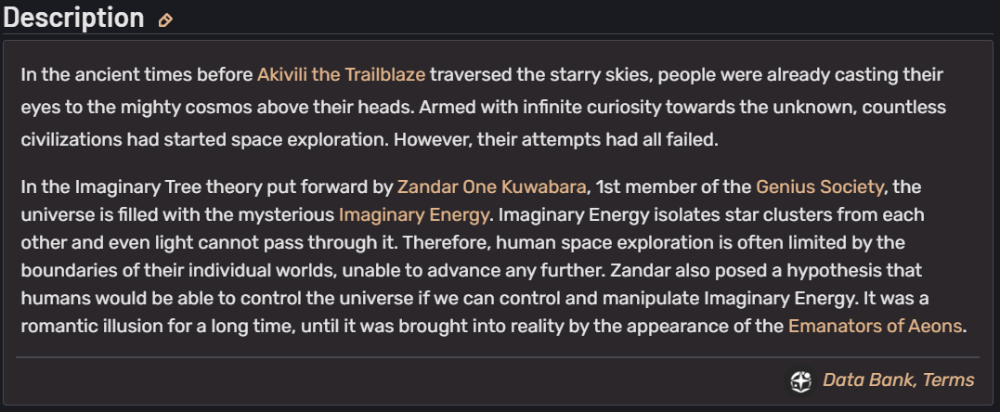
В древние времена, еще до того, как первопроходец Акивили покорил звездное небо, люди уже обращали свои взоры к могучему космосу над их головами. Движимые бесконечным любопытством к неизведанному, бесчисленные цивилизации начали осваивать космос. Однако все их попытки потерпели неудачу. Согласно теории Древа мнимости, выдвинутой Зандаром Одним Кувабарой (перевела как «Один потому что в оригинале всё таки «One», а не «First», но я бы с таким именем застрелилась, честно говоря), первым членом Общества гениев, Вселенная наполнена таинственной мнимой энергией. Мнимая энергия изолирует звёздные скопления друг от друга, и даже свет не может пройти сквозь неё. Поэтому космические исследования человечества часто ограничены пределами отдельных миров и не могут продвигаться дальше. Зандар также выдвинул гипотезу о том, что люди смогут управлять Вселенной, если научатся контролировать и управлять мнимой энергией. Долгое время это были лишь несбыточные мечты, пока они не стали реальностью с появлением Эманаторов во власти Эонов. [1]
Ну... Немного на самом деле. А что говорит Рацио во второй главе авантюры?
«Сейчас, как известно, наиболее распространенным является энергия Стелларонов, но в общем случае двигатели, использующие данное «топливо», быстро выходят из строя и в принципе нестабильны...» [2]
Как известно, видимо, одному только Господу Богу, потому что подтверждения этим словам в официальных источниках вы не найдёте. Почему в таком случае я решила в принципе использовать эту абсурдную концепцию? Во-первых, почему бы и нет? Да, звучит безумно на первый взгляд, но в каноне мы не раз сталкивались с примерами использования Стелларонов людьми в собственных целях. Другой разговор, что это никогда не заканчивалось чем-то хорошим, но и цели, и желания, загаданные известным нам Стелларонам, там были в общем-то довольно сомнительными. Я всё таки придерживаюсь мысли, что ими можно управлять и держать по контролем, если с умом подойти к делу, а кто как не учёные справятся с этой задачей лучше всего, да? Во-вторых, теоретически даже для самого маленького космического корабля, способного совершать гиперпрыжки, нужно СТОЛЬКО энергии, что вы себе даже представить не можете. Не, я серьёзно, прям НАСТОЛЬКО МНОГО. Мы ещё вернёмся к этому вопросу и вы наглядно поймёте, что я имею ввиду.
Разумеется, так как Honkai: Star Rail – это, в первую очередь, космоопера, то, например, Звёздный экспресс перемещается за счёт энергии Освоения и силы Акивили, которая вырабатывается путём этих же самых перемещений, а ялики Сяньчжоу вообще летают при помощи модифицированных нефритовых счёт. [3]
И вот казалось бы, магия сплошь и рядом – всё только благодаря Эонам и лорным условностям, зачем вообще пытаться что-то объяснить с научной точки зрения? Но! Но разве было бы разумно для космолётов КММ (о которых по большей части и ведёт речь мой Рацио) брать в пример корабли с Сяньчжоу или тем более Звёздный экспресс? Да это очевидно бред, потому что их технологии уникальны и явно не распространены по всей Вселенной. Но что же тогда делать? Как вы уже могли заметить, вариант «забить хуй и писать гомоэротику» в моём случае не рассматривается, потому что я люблю в таких технических вещах копаться (в гомоэротике, в прочем, тоже, но не суть), поэтому я далеко решила не ходить и обратила свой взор на Космическую станцию «Герта». Тем более она была спроектирована при поддержке КММ и изначально с целью сдерживания какого-то Стелларона, что неплохо коррелирует с моими доводами. [4]
Точного описания двигателей и топлива этой станции я не нашла, потому что вероятнее всего его (описания) и нет. В таком случае, я с чистой совестью решила придумать механизм осуществления космических полётов на большие расстояния (не с нуля, разумеется) для обычных людей, которые в моём понимании пользуются кораблями корпорации.
Из всех возможных около научных концепций межгалактических путешествий наиболее заманчивой кажется, разумеется, концепция варп-двигателя (от английского Warp drive, двигатель искривления). Идея такого двигателя была высказана ещё очень давно в 1930-ых годах, но широкую огласку получила с выходом сериала «Star Trek» в 1966 году и только в 1994 году физик-теоретик Мигель Алькубьерре предложил математическую модель основанную на общей теории относительности Эйнштейна. Вы спросите, а к чему эта историческая справка? Этим я хочу показать, что варп-двигатель – это не просто научно фантастическая гипотеза, а теория, над которой ведутся реальные научные дискуссии. Да даже NASA в 2008 году упоминали варп-двигатель на своём официальном сайте. [5] Но что же из себя представляет этот двигатель?
Варп-двигатель – это гипотетическая технология, позволяющая космическому кораблю перемещаться со сверхсветовыми скоростями, не нарушая при этом специальную теорию относительности Эйнштейна. Сам корабль находится в, так называемом, пузыре Алькубьерре и не движется быстрее света относительно локального пространства – вместо этого искривляется само пространство-время вокруг него. Для этого необходимо, чтобы пространство перед кораблём сжималось, как бы засасывая его в себя, а пространство позади – расширялось, толкая корабль вперёд. Но суть в том, что обычная материя всегда даёт положительную кривизну (притяжение), а для отталкивания нужна отрицательная плотность энергии, то есть экзотическая материя (не путать с антиматерией) [6], состоящая не из известных барионов (протонов и нейтронов [7]), а из таких, которые на практике получать ещё не удавалось.
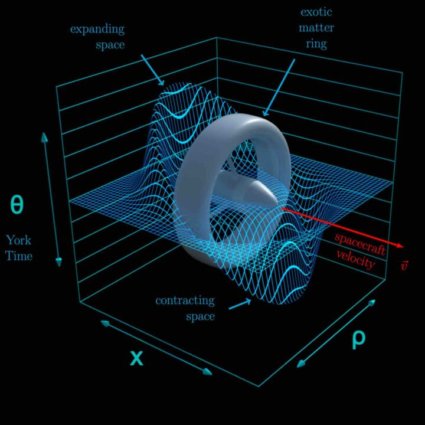
Но отрицательная плотность энергии – это как? Получается, мы подразумеваем, что в некотором объёме энергии меньше, чем в идеальном вакууме. Но идеальный вакуум – это и так полное отсутствие частиц, достижение абсолютного нуля по Кельвину. И ведь даже абсолютный ноль недостижим: для примера, в космосе температура около 2-4 К в пространствах, далёких от небесных тел, а это около 1 атома водорода на квадратный метер. Для сравнения при нормальных условиях (\(T=300 \text {К}, p=10^5 \text {Па}\)) в одном квадратном метре воздуха примерно 2,4 × \(10^{25}\) молекул (\(H_2\)) водорода. А отрицательная энергия – это, получается, меньше, чем ничего, которое и так недостижимо. А меньше, чем ничего – это сколько? Это противоположность чёрным дырам с их гигантской массой в минимально возможном объёме? На этом моменте я вспоминаю про слово «fiction» в названии телеграфа и говорю: так как я пишу всё таки не научную диссертацию, а фанфик по китайской гаче, то некоторые упущения, допустимые в жанре подобных игр, я буду использовать в моменты, когда мне это удобно, например, сейчас. Скажем так: это возможно, а как именно это возможно – уже не так важно.
Стоит ещё упомянуть о продвинутой модели варп-двигателя, предложенной в 2024 году: она более приближена к реальности, потому что использует только положительную энергию, но у неё есть существенный недостаток – движение со скоростью меньшей, чем скорость света (примерно 0,02c, где с – это скорость света и она равна 3 × \(10^8\) м/с). [8] В принципе, не особо имеет значение, какую модель рассматривать, но ради элемента фантастики всё таки остановимся на изначальной с отрицательной плотностью энергии. Тем более и там, и там затраты энергии колоссальные, что и является основной темой исследований Рацио в «Научной авантюре».
Наконец-то, спустя большое полотно текста (без которого, к сожалению, не получится грамотно объяснить мою мысль) мы подобрались к тому, ради чего это всё и задумывалось. Ну, что, готовы?
Что говорит Рацио во всё той же второй главе?
«Я же решил обратиться к технологиям, которые в наше время считаются допотопными – к термоядерному синтезу. Разумеется, одного лишь слияния трития и дейтерия недостаточно, чтобы запитать варп-двигатель даже рядового корабля КММ, потому что когда эффективность реакции только-только подходит к границе допустимой, температура плазмы достигает критического значения...» [2]
И чёрт, это как вариант! Но о чём вообще речь? Что несёт этот сексуальный, умный и невероятно обворожительный мужчина с big brain energy? Давайте по порядку.
Термоядерный синтез (управляемый) – разновидность ядерной реакции, при которой лёгкие атомные ядра объединяются в более тяжёлые с целью получения энергии. Управляемый термоядерный синтез отличается от традиционной ядерной энергетики тем, что в последней используется реакция распада, в ходе которой происходит обратный процесс – из тяжёлых ядер получаются более лёгкие. Ещё прошу заметить, что электроны в таких реакциях не участвуют. Присутствуют только ядра, то есть ионизированные атомы (ионы).
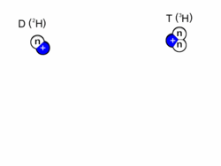
При синтезе D и T получается \(\alpha \)-частица (ядро гелия \(^4He\)), нейтрон и большой выброс энергии.
Дейтерий, тяжёлый водород, обозначается D (или \(^2H\)) – стабильный изотоп водорода с атомной массой, равной 2. Ядро состоит из 1 протона и 1 нейтрона.
Тритий, ваще тяжёлый водород жестб, обозначается T (или \(^3H\)) – радиоактивный изотоп водорода, с атомной массой, равной 3. Ядро состоит из 1 протона и 2 нейтронов.
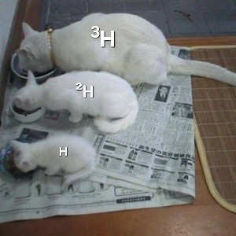
Для того, чтобы произошла ядерная реакция, исходные атомные ядра должны преодолеть так называемый «кулоновский барьер» – силу электростатического отталкивания между ними. Для этого они должны иметь большую кинетическую энергию. Согласно кинетической теории, кинетическую энергию движущихся микрочастиц вещества (атомов, молекул или ионов) можно представить в виде температуры, а следовательно, нагревая вещество, можно достичь термоядерной реакции. Именно эту взаимосвязь нагревания вещества и ядерной реакции и отражает термин «термоядерная реакция». [9]
Это всё замечательно, конечно, но при каких температурах должны происходить эти реакции? На каком расстоянии должны находится ядра, чтобы произошёл синтез? Хорошие вопросы, но давайте не будем смотреть в интернет и посчитаем всё сами. Мы же с вами умняшки, да? Если не хотите вникать в формулы (что я максимально осуждаю, там самая мякотка), то можете скипнуть до этого момента.
Между двумя заряженными частицами действует кулоновская сила, которая равна:
\[ \vec {F} = k \frac {|q_1||q_2|} {r_{12}^2} \vec {r}, \] где \(\vec {F}\) – кулоновская сила (величина векторная), \(q_1\) и \(q_2\) – заряды первой и второй частицы соответственно, \(r_{12}^2\) – расстояние между ними в квадрате, \(\vec {r}\) – единичный вектор, направленный от одного заряда к другому, а \(k\) – коэффициент пропорциональности, \(k=9 \cdot 10^9 \frac {\text {Н}^2 \cdot \text {м}}{\text {Кл}^2} \) (в вакууме).
Но речь шла про кулоновский барьер и энергию, а следовательно нужно из общих соображений выразить U(r) и перейти от векторной силы к скалярной энергии потенциального барьера. Выбираем в качестве нулевого уровня потенциальной энергии бесконечное расстояние до заряда:
\[ U(\infty ) = 0 \]
Тогда потенциальная энергия на расстоянии r равна отрицательной работе, которую совершает кулоновская сила при перемещении заряда из бесконечности до этого расстояния:
\[ U(r) = - \int _{\infty }^{r} \vec {F} \cdot d\vec {l} \]
Путём нехитрых вычислений, которые я не буду приводить в угоду экономии моего и вашего времени, получаем следующую формулу:
\[ \text {писюльчики} =\int _{\text {от яйца}}^\text {до яйца} \frac {\text {пенис}}{\text {хуй}} dz \]
Ой, нет, что-то не то... А, вот же она!
\[ U(r) = k\frac {q_1 q_2}{r} \]
(Модуль у зарядов убрала, так как мы рассматриваем протоны, а они в любом случае положительные)
Итак, заряды известны, а что насчёт расстояния? Для этого возьмём формулу расчёта радиуса ядра и скажем, что характерное расстояние, на котором ядра двух разных атомов начинают притягиваться, пропорционально кубическому корню количества нуклонов в этих ядрах:
\[ R \approx r_0 \left ( A_1^{1/3} + A_2^{1/3} \right ), \] где \(r_0\) – некоторая эмпирическая константа, равная 1,2 фм (фемтометр, 1 фм = \(10^{-15}\) м), а \(A_1\) и \(A_2\) – количество нуклонов (сумма протонов и нейтронов) первого и второго ядра соответсвенно.
Почему именно сумма? Потому что каждое ядро имеет свой радиус, а барьер «кончается», когда ядра соприкасаются поверхностями. Вообще вывод этой формулы и получение константы связан с капельной моделью ядра и очень хорошо показывает, как определить размеры того, что мы не можем увидеть глазом (Радиус ядра R – расстояние, на котором плотность ядра падает в 2 раза). [10]
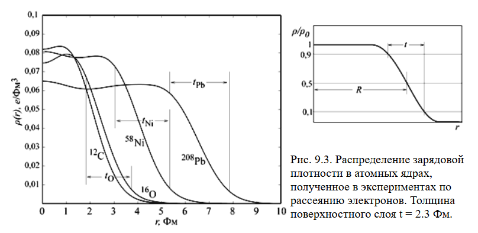
Теперь мы можем посчитать энергию потенциального барьера, но что дальше? А дальше переходим к функции распределения Максвелла–Больцмана, которая поможет нам узнать, сколько частиц в нашей системе обладает достаточной энергией, чтобы пересечь потенциальный барьер (\(E \geq U\)):
\[ f(E) \, dE = \frac {2}{\sqrt {\pi }} \frac {1}{(kT)^{3/2}} \, e^{-E / kT} \, dE, \] где k – это уже постоянная Больцмана, равная \(1,38 \cdot 10^{-23} \frac {\text {Дж}}{\text {К}}\), а \(e^{-E / kT}\) – это экспоненциальный хвост (Больцмановский фактор).
Вероятность найти частицу с энергией в интервале от \( E \) до \( E + dE \) пропорциональна именно этому.
Полная вероятность того, что ядро преодолеет потенциальный барьер – это интеграл от нижней границы энергии до бесконечности распределения:
\[ P(E \ge U) = \int _{U}^{\infty } f(E) \, dE \]
Ну, что, формулы прикинули, теперь пора бы и к числам переходить. Для оценки релевантности моих умозаключений возьмём какой-нибудь очевидный пример термоядерного синтеза. Например протонные реакции на солнце: там мы и температуру точную знаем и энергию с лёгкостью посчитаем. Протон-протонный цикл состоит из трёх этапов, но давайте остановимся на самом первом и посчитаем вероятность слияния двух протонов:
\[ R = 1,2 \left ( 1^{1/3} + 1^{1/3} \right ) = 2,4 \text {фм} \]
\[ U(R) = 9 \cdot 10^{9}\frac {(1,6 \cdot 10^{-19})^2}{2,4 \cdot 10^{-15}} = 9,6 \cdot 10^{-14} \text {Дж} = 600 \text {кэВ} \]
\[ T=15,7 \cdot 10^{6} К \text {-- температура в центре солнца} \]
\[ kT = 1,38 \cdot 10^{-23} \cdot 15,7 \cdot 10^{6} = 2,2 \cdot 10^{-16} \text { Дж} = 1,35 \text {кэВ} \] Получается, что \(U \gg kT\), а значит при вычислении вероятности наибольший вклад внесёт экспонента, а множителем перед ней можем пренебречь. Приближение выйдет довольно грубым, но нежно я не хочу (а в нашем случае и не требуется).
\[ P(E \ge U) \approx C \cdot \exp \left ( -\frac {U}{kT} \right ), \] где \( C \) – какой-то коэффициент порядка 1 (или медленно меняющийся), поэтому опускаем.
\[ P(E \ge U) = \exp \left ( -\frac {600}{1,35} \right ) \approx 10^{-193} \]
То есть, вероятность того, что вблизи ядра солнца найдутся два таких протона, которые смогут синтезировать друг с другом... нулевая?
Друзья, плохие новости: походу солнце только что погасло, а сейчас мы с вами доживаем последние 8 минут своей жизни. Ладно, шучу.
Наверное, именно так себя и чувствовал Рэлей-Джинс, когда выдвинул очень крутой закон теплового излучения абсолютно чёрного тела, по которому Вселенная в принципе не может существовать из-за УФ катастрофы (клянусь, это моя любимая тема, почитайте [11]). Но лично я ввела вас в заблуждение намеренно *злобный смех*.
Всё дело в том, что термоядерный синтез – квантовый эффект, а следовательно на него распространяются квантовые законы. Доказать это просто: задача является квантовой, если рассматриваемая частица (квазичастица), проявляет свойства корпускулярно-волнового дуализма. Для этого необходимо выполнение условия: характерные размеры системы должны быть меньше или сопоставимы с длиной волны де Бройля:
\[ \lambda _{\text {Б}} = \frac {h}{p}, \] где h – постоянная Планка, равная \(6,63 \cdot 10^{-34} \text {Дж} \cdot \text {с}\), p – импульс частицы.
Подробно расписывать вывод не буду, скажу только, что импульс посчитаем через энергию теплового движения протонов на солнце:
\[ \lambda _{\text {Б}} = \frac {h}{p} = \frac {h}{mv} \]
\[ E_k = \frac {3}{2}kT = \frac {mv^2}{2} \]
\[ v = \sqrt {\frac {3kT}{m}} = \sqrt {\frac {3 \cdot 1,38 \cdot 10^{-23} \cdot 15,7 \cdot 10^{6}}{1,67 \cdot 10^{-27}}} = 623 \text {км/с} \]
\[ \lambda _{\text {Б}} = \frac {6,63 \cdot 10^{-34}}{1,67 \cdot 10^{-27} \cdot 623 \cdot 10^3} = 637 \text {фм} \]
\[ 2,4 \text {фм} \ll 637 \text {фм} \] \[ R \ll \lambda _{\text {Б}} \]
Ширина потенциального барьера много меньше волны де Бройля, так что имеем полное право описать вероятность процесса синтеза с учётом туннельного эффекта.
Туннельный эффект, туннелирование – преодоление микрочастицей потенциального барьера в случае, когда её полная энергия (остающаяся при туннелировании неизменной) меньше высоты барьера. Туннельный эффект – явление исключительно квантовой природы, невозможное в классической механике и даже полностью противоречащее ей. [12]
Другими словами, существует ненулевая вероятность, что частица «проскочит» этот барьер, если её длина волны будет больше этого барьера. Для расчёта такой вероятности вспомним про существование фактора Гамова (я даже не знала про него).
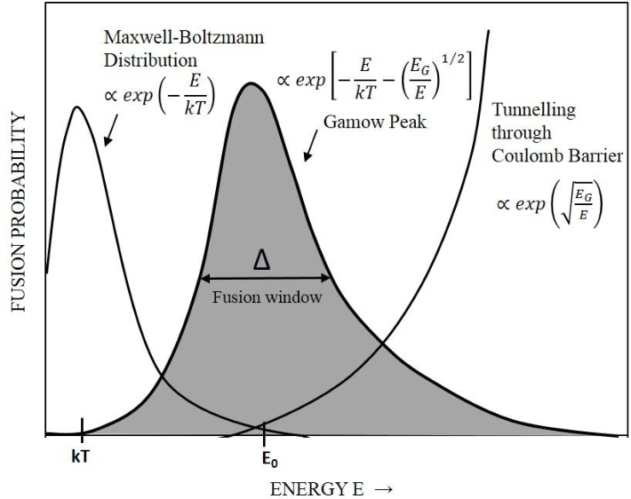
Из картинки выше видно, что вероятность синтеза в ядерной реакции равна произведению коэффициента распределения Максвелла-Больцмана и коэффициента Гамова. [13] Но не всё так просто: для начала нам нужно найти энергию, которая будет соответствовать пику вероятности – пику Гамова. В противном случае, это всё не имеет смысла, потому что если мы оставим U=600 кэВ, то никакого туннелирования наблюдать не будем – просто все частицы будут по энергии выше барьера. А как найти максимум графика? Вспоминаем алгебру 8 класс тему «производная» (всё гениальное просто):
\[ P(E) \propto \exp \left ( -\frac {E}{k T} - \sqrt \frac {E_G}{E} \right ) = P_{\text {MB}}(E) \cdot P_{\text {G}}(E) \] Обозначим экспоненту как функцию:
\[ f(E) = -\frac {E}{kT} - \sqrt {\frac {E_G}{E}} \] Берём производную по \(E\) и приравниваем к нулю:
\[ \frac {df}{dE} = -\frac {1}{k T} - \frac {d}{dE} \left ( \sqrt {\frac {E_G}{E}} \right ) \]
\[ \sqrt {\frac {E_G}{E}} = (E_G)^{1/2} \cdot E^{-1/2} \]
\[ \frac {d}{dE} \left ( E_G^{1/2} E^{-1/2} \right ) = E_G^{1/2} \cdot \left ( -\frac {1}{2} \right ) E^{-3/2} = -\frac {1}{2} \sqrt {\frac {E_G}{E^3}} \]
\[ \frac {df}{dE} = -\frac {1}{k T} + \frac {1}{2} \sqrt {\frac {E_G}{E^3}} = 0 \]
\[ \frac {1}{k T} = \frac {1}{2} \sqrt {\frac {E_G}{E^3}} \]
\[ \frac {4}{(k T)^2} = \frac {E_G}{E^3} \]
\[ E = \left ( \frac {E_G \cdot (k T)^2}{4} \right )^{1/3} \]
Всё знаем кроме загадочной \(E_G\) – энергии Гамова. Формула простая:
\[ E_G = 2 \mu c^2 (\pi \alpha Z_1 Z_2)^2, \] где \(\mu \) – приведённая масса, \(\alpha \) –постоянная тонкой структуры, равная \(7,3 \cdot 10^{-3}\), \(c\) – скорость света, \(Z_1\) и \(Z_2\) – атомные номера первой и второй частицы соответственно.
\[ \mu = \frac {m_1 \cdot m_2}{m_1+m_2} \] Рассчитаем \(E_G\) для нашего случая (два протона): \[ \mu = \frac {1,67 \cdot 10^{-27} \cdot 1,67 \cdot 10^{-27}}{1,67 \cdot 10^{-27} + 1,67 \cdot 10^{-27}} = 8,35 \cdot 10^{-28} \text {кг} \] \[ E_G = 493 \text {кэВ} \]
Возвращаемся к значению энергии пика графика и за одно рассчитываем полную вероятность (с учётом и Максвелла-Больцмана и коэффициента Гамова):
\[ E = \left ( \frac {493 \cdot (1,35)^2}{4} \right )^{1/3} = 6 \text {кэВ} \]
\[ P(E) = \exp \left ( -\frac {6}{1,35} - \sqrt \frac {493}{6} \right ) = 1,37 \cdot 10^{-6} \]
Вот это уже другое дело. В процентах выходит 0,000137%, что вроде бы мало, но если учесть, что на солнце этих протонов триллиарды миллионов, да и вероятность мы только для пика считали, а там ведь ещё при меньших или больших значениях энергии может синтез происходить, то выходят вполне разумные числа.
Самая сложная часть пройдена, переходим к чпоку. Ой, то есть научпопу.
Надеюсь все оценили мои глубокие познания в квантовой физике (не хочу хвастаться, но я только разминалась), а теперь давайте вернёмся к изначальной теме: проблема больших объёмов энергии. Проведём мини ресёрч и узнаем какие реакции термоядерного синтеза уже были открыты на сегодняшний момент. Вот список самых основных:
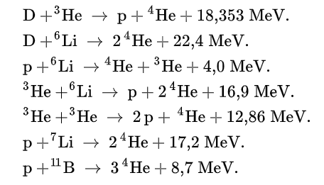
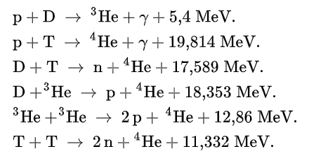
Самой заманчивой из всего списка очевидно выглядит реакция D+Li (дейтерий+литий) с выбросом в 22,4 МэВ за один акт. Давайте, используя выведенные формулы в прошлом блоке, рассчитаем температуру, при которой вероятность этой реакции будет максимальной. Я это сделаю за кадром с вашего позволения и просто скажу, что такая температура будет равна около 766 миллионов Кельвина. Это примерно в 50 раз больше, чем температура Солнца и в 4 раза больше температуры, которую удавалось достичь при реальных экспериментах. В принципе, достаточно хорошие и перспективные результаты. Но что насчёт количества энергии? Сколько её в принципе надо?
Значения энергии для запуска варп-двигателя в разных источниках отличаются: где-то учитывается современная модель, где-то до сих пор рассматривают теорию с отрицательной плотностью энергии. Но я остановлюсь на значении в 4,04 × \(10^{44}\) Дж. [14] Такой энергии эквивалентна масса в 4,49 × \(10^{27}\) кг или для сравнения – 2,365 массы Юпитера. Но сколько же понадобится массы лития и дейтерия в таком случае? Вычисления там тоже не сложные: считаем сколько реакций всего потребуется и умножаем на суммарное количество нуклонов. Выходит 1,13 × \(10^{30}\) кг лития и 0,37 × \(10^{30}\) кг дейтерия... Это примерно что-то вроде нуууу 790 МАСС ЮПИТЕРА??? А ведь надо ещё учесть, что у нас все исходники – это плазма. Другими словами: литий должен быть в виде газа.
Это я молчу про ограничения в объёме и что все расчёты проводятся для маленького пузыря (внутренний радиус 10 м, внешний 20 м). А что делать, если космолёт больше этих размеров? Ещё больше энергии брать? А откуда? Из холодильника с Юпитерами? Да, ну и задачка...
В таком случае переходим к супер фантастическим расчётам и вспомним что высота потенциально барьера обратно пропорциональна его ширине. А это значит, что взяв супер тяжёлые ядра с большим количеством нуклонов, мы сможем уменьшить величину барьера, повысить вероятность и сильно увеличить выходную энергию. Что у нас там по таблице Менделеева есть? Полоний? Уран? Ну, будет немного радиации, ничего страшного, зато сколько энергии получится, да?
хуй на
Нет, это так не работает и сейчас я объясню почему. Существует такое понятие, как энергия связи ядра – это энергия, которую нужно затратить, чтобы полностью разобрать ядро на отдельные протоны и нейтроны. Чем выше эта энергия на один нуклон (протон или нейтрон), тем стабильнее ядро. При ядерной реакции выделяется энергия (экзотерическая), если итоговое ядро имеет б´oльшую энергию связи на нуклон, чем исходные ядра. Разница в массе (дефект массы) превращается в энергию по формуле \(E = mc^2\). Если итоговое ядро имеет меньшую энергию связи на нуклон – реакция поглощает энергию (эндотермическая).
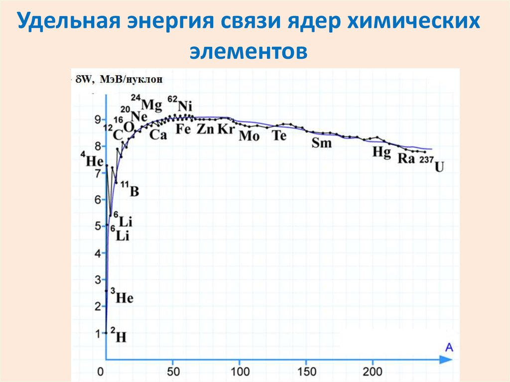
Как видно из графика, у лёгких ядер (всё, что слева от железа Fe) энергия связи при слиянии растёт, причём у первых элементов очень стремительно, у тяжёлых (всё, что справа от железа Fe) – падает. Железо – самый стабильный элемент во Вселенной и рассматривать реакции синтеза с чем-то тяжелее него даже гипотетически бессмысленно. Но даже если мы чудом сможем осуществить реакцию по слиянию 56 протонов, то получили бы примерно 492 МэВ, что бесспорно очень и очень много, но в контексте варп-двигателя всё ещё недостаточно. Возвращаясь к любимым Юпитерам – это около 250 масс Юпитера.
Помните я говорила про колоссальные значения энергии? Вот! А вы мне не верили. Что ж, придётся лезть в реальные дебри научной фантастики и вспомнить про любимые кварки...
Сейчас я вам поведаю о своих hard si-fi теориях, отражённых в авантюре. Но для начала давайте вспомним, что говорит Рацио в девятой главе:
Можно синтезировать ионизованный водород, другими словами – одиночный протон. Звёзды, частично некоторые планеты или другие космические объекты в основном состоят именно из «чистых» протонов. Нынешняя наука умеет обращаться с такого рода «материалом» и даже создавать простейшие частицы. Вот только протон, как и нейтрон, состоит из кварков, которые сами по себе в природе не существуют. А если всё же попробовать «достать» их из каких-нибудь более крупных частиц, то на это потребуется столько же энергии, сколько и для обратного процесса. Другими словами: синтез протонов таким способом – максимально бесполезное занятие. Но ведь помимо кварков в протоне есть ещё и глюоны – переносчики сильного взаимодействия, не имеющие ни массы, ни заряда. Именно благодаря им элементарные частицы очень стабильны и не распадаются. В противовес глюонам существуют Z-бозоны – переносчики слабого взаимодействия, которые, в свою очередь, массой обладают. Что, если для связи двух u-кварков и одного d-кварка использовать Z-бозон? Такая частица самостоятельно существовать не сможет, ей понадобятся внешние факторы для поддержания жизни... Если соединить uud кварки с помощью Z-бозона, то получится «тяжёлый нестабильный протон», как Веритас называет его в собственных расчётах. Или можно взять udd кварки и W-бозон – в таком случае получается «тяжёлый положительно заряженный нестабильный нейтрон». Нестабильные они, потому что вне внешнего поля, держащего все составляющие вместе, самопроизвольно распадаются за считанные фемтосекунды. А если для расщепления достаточно просто выключить поле, то синтез кварков при помощи уже глюонов будет сопровождаться колоссальным выбросом энергии. На выхлопе – привычные стабильные протоны и нейтроны, никаких отходов или космического мусора. [15]
Начнём с самого начала. Кварк – бесструктурная элементарная частица и фундаментальная составляющая материи. Кварки объединяются в составные частицы, называемые адронами, наиболее стабильными из которых являются протоны и нейтроны.
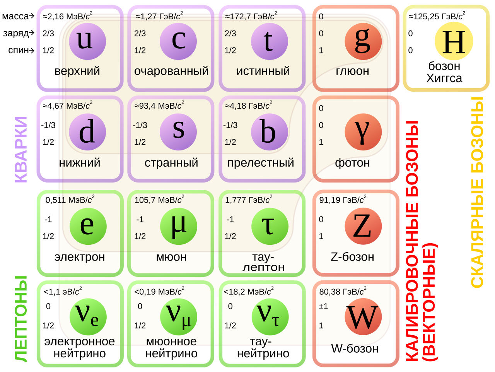
Берём за сырьё протоны (водородную плазму). Каждый протон состоит из трёх кварков uud: двух верхних и одного нижнего (по таблице очень наглядно, что при суммировании заряд получается +1 (в элементарном заряде, то есть 1 заряд электрона только с плюсом)). Эти кварки соединены глюонами –элементарными безмассовыми частицами, являющимися переносчиками сильного взаимодействия. Безмассовые они, кстати, только в покое, как и фотоны (частица может не иметь массы покоя, только если движется на скорости света, иначе она просто исчезает).
Глюоны – векторные калибровочные бозоны, непосредственно отвечающие за сильное цветовое взаимодействие между кварками в квантовой хромодинамике. В отличие от фотонов в квантовой электродинамике, которые электрически нейтральны и не взаимодействуют друг с другом, глюоны сами несут цветовой заряд и поэтому они не только переносят сильное взаимодействие, но и участвуют в нём. Квантовые числа кварков – электрический заряд, барионное число, аромат – остаются неизменными при испускании и поглощении глюонов, тогда как цвет кварков изменяется. [16]
Цветовой заряд – понятие, схожее с электрическим зарядом, но в отличие от него, имеющего две вариации знака, предполагает наличие трёх цветов: «красный» (r), «зелёный» (g) и «синий» (b).
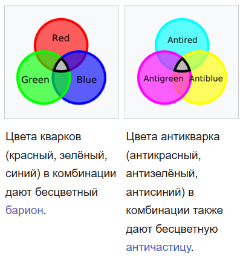
Ничего общего с цветами, видимые глазом, они не имеют, а сама концепция цветов была предложена при создании квантовой хромодинамики для того, чтобы объяснить, каким образом в нуклонах могут сосуществовать кварки с одинаковыми квантовыми числами, не нарушая принципа Паули. И вот сейчас начнётся принципиально важная для понимания моей теории тема, читайте внимательно.
Как вы уже могли заметить, на картинке с классификацией элементарных частиц указаны три основные характеристики каждой из них: масса, заряд и спин. Если с первыми двумя всё очевидно (масса выражена в единицах энергии на секунды в квадрате по формуле \(E = mc^2\)), то что такое спин? Спин – это квантовомеханическое свойство частиц, которое можно представить себе как вращение вокруг своей оси (собственный момент импульса частица). Спин имеет дискретные значения, которые зависят от типа частицы. По такому принципу все частицы можно разделить на два больших класса: фермионы (те, у которых спин полуцелый \(\frac {1}{2}, \frac {3}{2}, \frac {5}{2}\) и т.д.) и бозоны (те,у которых спин целый 0, 1 и редко 2).
Для лучшего понимания спина можно представить себе поведение объектов
в макромире:
Спин 0. Представьте точку, которая выглядит одинаково независимо от ее
ориентации. Это аналогично частице со спином 0.
Спин 1. Объект, такой как карандаш с заостренным концом, вернется в
исходное положение после одного полного оборота на 360 градусов.
Спин 2. Можно сравнить с карандашом, заточенным с двух концов:
вернется в исходное положение после одного полного оборота на 150
градусов.
Полуцелый спин (например \(\frac {1}{2}\)). Чтобы вернуть объект в исходное
состояние, потребуется поворот на 720 градусов. Это можно представить
как точку, движущуюся по ленте Мебиуса, где требуется два полных оборота
для достижения первоначального состояния. [17]
Так вот, для фермионов всегда действует принцип Паули — закон, утверждающий, что в квантовой системе две тождественные частицы с полуцелым спином не могут одновременно находиться в одном квантовом состоянии. Рассмотрим как это работает на примере электронов. Все вы наверняка помните из курса школьной химии вот такие ячеечки со стрелочками, которое приходилось рисовать, при описании заполнения орбит атома электронами.
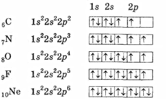
И наверняка вам говорили, что на одной орбите может находится максимум два электрона, обосновывая это тем, что они движутся параллельно и равноудалённо друг от друга и только благодаря такой конфигурации они по сути не взаимодействуют друг с другом. Но всё немного сложнее. Для описания простейших частиц используют квантовые числа. В случае электрона их четыре: n (главное квантовое число), l (орбитальное квантовое число), m (магнитное квантовое число) и s (спиновое квантовое число). Все эти числа могут принимать только целые значения, кроме спинового числа. Главное отвечает за энергию (так как электрон может принимать только дискретные значения энергии), орбитальное показывает тип орбитали, как ни странно (s, p, d, f и т.д. это уже химия), магнитное характеризует ориентацию в пространстве орбитального момента импульса электрона или пространственное расположение атомной орбитали (поэтому может принимать целые значения от -l до +l), а спин может быть равен \(+\frac {1}{2}\) или \(-\frac {1}{2}\) (для электрона). Так вот принцип Паули гласит, что в системе не может существовать два электрона с полностью совпадающими квантовыми числами. А так как этот запрет действует для всех фермионов, а у всех кварков внутри протона спин полуцелый, то теперь становится понятнее, зачем вообще ввели понятие цветового заряда.
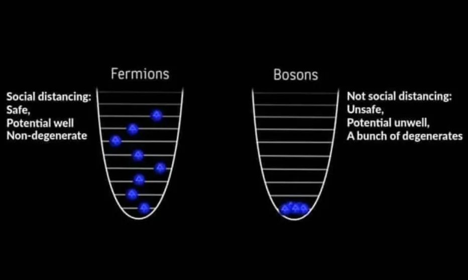
А сейчас давайте представим, что несмотря на законы ядерной и квантовой физики, существует технология, позволяющая заменить глюон внутри протона на Z-бозон таким образом, чтобы кварки всё равно оставались связаны. Допустим, такого результата мы можем добиться при включении определённого электромагнитного, гравитационного или других полей и помещении протонов в газ Z-бозонов. В таком случае мы получим нестабильные Z-протоны, которые уже не будут цветонейтральными, да и в принципе довольно ограничены по времени жизни. Вы спросите: а зачем вообще нужен промежуточный этап с заменой связующей составляющей протона, если в конечном счёте нам надо просто сначала разъединить, а потом соединить кварки? Ну, если бы всё было так просто, мы бы уже на Марсе жили. Чтобы разорвать связи кварков необходимо слишком много энергии, что в теории становится слишком невыгодно: сколько затратим – столько и получим. А если мы каким-то образом сможем заменить глюоны на Z-бозоны (рекомбинацией, без фактического существования кварком по отдельности), то протон в итоге сам по себе распадётся из-за того, что его энергия будет превышать поверхностное натяжение. А вот как это сделать, я, к сожалению, не знаю. Знала бы, писала бы нобелевскую, а не гейские фанфики.
Далее по задумке мы должны снова прийти к привычным протонам. Следующий шаг: отключение стабилизирующего поля. Что произойдёт в таком случае? Быть поодиночке кваркам энергетически невыгодно, поэтому вспомним, что у верхних и нижних кварков противоположный знак электрического заряда, поэтому логично предположить, что они начнут притягиваться друг к другу, образовывая ud-пару или же ди-кварк. И знаете, что я вам скажу? Это даже не моя выдумка! Действительно существуют научные статьи на тему ди-кварков (только существуют они всё равно только внутри протона/нейтрона как гипотетическая квазичастица), которую я немного расширила научной фантастикой.
В одной научной статье под названием «Quark Matter May Not Be Strange» 2018 года [18] говорится о том, кварковая материя только из u- и d-кварков (udQM) может быть энергетически более выгодной, чем обычные атомные ядра и даже странная кварковая материя (SQM с u, d, s-кварками). Обычно считалось, что ud-материя невозможна, потому что она бы «съедала» все обычные ядра, приводя к катастрофе. Но авторы сатьи опровергают это суждение: ud-материя действительно имеет более низкую энергию на барион в объёмном пределе, но из-за поверхностных эффектов она становится стабильной только начиная с достаточно большого числа барионов A \(\ge \) 300. Это объясняет, почему обычные ядра стабильны, и предсказывает существование новой формы стабильной материи «за пределами периодической таблицы». В объёмном пределе (большие A) минимальная энергия на барион для ud-материи составляет \(\approx \) 875–960 МэВ (часто около 903–905 МэВ), что ниже 930 МэВ (энергия железа-56, самого стабильного ядра). Отсюда и название статьи: кварковая материя может стабильно существовать без единого странного кварка (s в таблице).
И тут мы подходим к самому интересному. Ди-кварки – бозоны, так как при слиянии верхнего и нижнего кварка их спины суммируются и может получится два случая: спин 0 (спины антипараллельны – синглетное состояние), спин 1 (спины параллельны – триплетное состояние). Энергетически более выгоден спин 0, но даже это не так важно как то, что большое скопление ди-кварков, как в нашем случае – это Бозе-газ. Впоследствии – сверхтекучий Бозе-конденсат. [19] Следовательно, в системе может существовать бесконечное количество частиц в одинаковом состоянии. Понимаете о чём я? 960 МэВ – это минимальная энергия связи на барион, когда их самих 300 штук. А в нашем случае этих условных барионов – миллионы, миллиарды, да хоть вся Вселенная, если сможем её в реактор запихнуть. Мы больше не ограничены теорией (ну почти), а лимит энергии определяется только объёмом нашего газа. Это уже не ГэВ, а ТэВ (тера \(10^{12}\)) или даже ПэВ (пета \(10^{15}\)).
Следующий этап я назвала глюонной спиновкой: инжекция когерентного глюонного потока → переплетение ди-кварковых пар в три-кварковые конфигурации → выброс избыточного кварка (верхнего или нижнего) → образование стабильных протонов и нейтронов с последующим возобновлением цикла, за счёт рекомбинации «свободных» кварков в ди-кварки. Происходит переход из конденсата в смешанный газ и энергетическая разница между двумя ди-кварками и протоном с нижним кварком выделяется в качестве чистой энергии:
\[ Q = \Delta E_{\text {bind}} + E_{Z\text {-excess}} + E_{\text {gluon-spin}}, \]
где \(\Delta E_{\text {bind}}\) – разница энергии связи между ди-кварковым конденсатом и обычным барионом, \(E_{Z\text {-excess}}\) – избыточная энергия, «замороженная» в Z-стабилизированном состоянии, \(E_{\text {gluon-spin}}\) – вклад когерентной глюонной спиновки.
Но не зря я отметила, что мы почти неограниченны, потому что некоторые моменты в контексте hard science fiction всё таки необходимо учесть:
\(\bullet \) Не вся энергия идёт в полезный «выхлоп» – часть уходит в гамма-излучение,
нейтрино, кинетическую энергию вылетающих кварков и нагрев реактора.
\(\bullet \) КПД можно сделать фантастически высоким (70–80 %) благодаря сверхтекучему
конденсату и цветовому эффекту, но не 100%.
\(\bullet \) Риск «цветового пробоя» – если конденсат слишком плотный, весь объём может
перейти в настоящую кварк-глюонную плазму с катастрофическим выбросом
энергии.
\(\bullet \) Риск цепной реакции – если процесс однажды «сорвётся» и конденсат начнёт
самопроизвольно расти, поглощая окружающую обычную материю, остановить
его будет практически невозможно. ud-кварковая материя может оказаться
более стабильной, чем обычные ядра и тогда один неудачный запуск способен
привести к неконтролируемому каскаду.
Разумеется, что даже с этими ограничениями модель далека от идеала, но для литературного произведения теория достаточно интересная.
О, а ещё мне нравится один момент, который скорее «декоративный» в научном проекте. В процессе работы термокваркового реактора при достижении критической цветовой плотности и переходе ди-кварковой системы в сверхтекучий Бозе-Эйнштейновский конденсат наблюдаются макроскопические коллективные колебания. Эти колебания возникают вследствие когерентного движения большого числа скалярных ди-кварков (спин 0) в едином квантовом состоянии и могут быть зарегистрированы как низкочастотные механические и акустические моды реакционной камеры. Другими словами – реактор издаёт своеобразный фоновый шум и если его не экранировать, то можно услышать как поют звёзды (потому что звёзды в основном состоят из протонов и вот такая романтичная аналогия выходит). Человеческое ухо правда такие низкочастотные колебания не способно уловить, но с помощью каких-нибудь преобразователей, думаю, можно послушать эту «музыку». И если музыка стихнет (цветовой пробой), то замолчит вообще вся Вселенная.
Устали? Чувствую, что да. Я сама уже из сил выбилась. В какой-то момент хотелось вообще всё бросит, забыть как страшный сон, но потом я спросила себя: «А Рацио бы гордился тобой после такого?» и пришлось ебашить. Возможно я ещё подниму тему этого проекта в самом фанфике, по крайней мере мне очень хотелось бы, но как будущее сложится я не знаю, так что загадывать не буду. Подводя итоги, я вам наглядно показала, почему вы с вами ещё не можем летать в космосе на длёкие расстояния и какую сову надо на глобус натянуть (прости Рацик), что бы это сделать. Но вот доктор Рацио – гений, поэтому все необъяснённые мной моменты я оставлю на его совести. Всех люблю, всех целую, учите физику <3
1. Рацио boykisser:
2. В честь меня назвали группу мезонов:
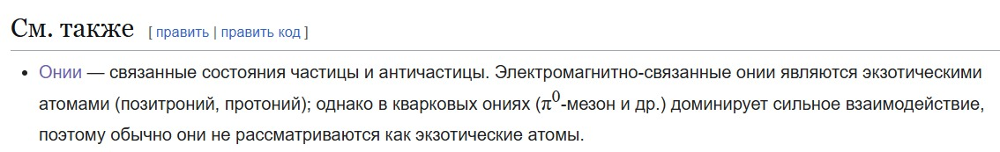